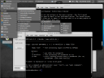

Security testing with BackBox 2
Security- and penetration-testing Linux distributions are a niche market, but a competitive one. One of the newer players in the game is BackBox (not to be confused with BlackBox), a lightweight, community-built pen-testing distribution capable of running in liveUSB mode or as a permanent install. BackBox reached its 2.0 release on September 3, with a substantial increase in the tool set it provides.
To those who follow pen-test distributions, the name "BackBox" immediately brings to mind one of the more established projects in this space, BackTrack Linux, which LWN looked at in January 2010. BackBox definitely draws on BackTrack for inspiration, although there are some important differences in content and in the way the distributions are managed.

BackBox is built on top of Ubuntu, and the 2.0 release uses 11.04 as its base. However, the ISO images provided for download strip out large swaths of irrelevant packages, replacing the default GNOME environment with Xfce and Fluxbox. 32-bit and 64-bit images are provided (Bittorrent and HTTP downloads), and weigh in at 924 and 945 MB, respectively. As is the case with vanilla Ubuntu, BackBox 2 can run from optical disc or as a live USB image, complete with persistent storage. Once booted, you can choose to install to a hard disk.
Xfce is intended to serve as a slim-resource environment, but if even that is too memory-intensive, the BackBox bootloader has a command-line-only entry as well. Obviously one usage of this option is to enable older hardware to serve as the testing and auditing platform, but the project wiki also points out that BackBox can be used on beefier systems to perform processor-intensive tasks like brute-force decryption and password-cracking. Minimizing the overhead is no doubt a concern there as well. Fortunately, most of the security tools provided by BackBox run perfectly well in the console environment (although you have access to some nice visualization tools in the network analysis section when running Xfce).
Tool time
Speaking of the tools, the auditing and testing packages added by the BackBox project make up for the largest set of changes from a generic Ubuntu or Debian system. By my count, BackBox 2 ships 77 security testing programs, which is up from 49 in BackBox 1. The count is not scientific; it is possible that some of the tools are part of a larger package, but in any case, it makes for a substantial increase in the offerings over the previous release. Users who fall on the BackTrack side of the BackBox-versus-BackTrack rivalry often point out that the older distribution offers a significantly larger tool count. This is still true, but if the raw number of tools is truly important—which is a bit questionable—BackBox is making steady progress.
Of course, on the "numbers" front, some of the packages are veritable Swiss-army-knives themselves, such as the Metasploit Framework, which provides access to numerous utilities, and some are really just useful system packages, such as NTFS filesystem tools. In Xfce's main applications menu, BackBox splits its security test kit into a top-level "Audit" menu of its own, sorting the tools into a task-based hierarchy: Information Gathering (which includes general network scanning tools as well as fingerprinting), Vulnerability Assessment, Exploitation, Privilege Escalation (which includes network sniffing, spoofing, and password cracking), Maintaining Access, Forensic Analysis, VoIP Analysis, Wireless Analysis, Stress Tools, and Miscellaneous.
The forensics and VoIP sections are new. Forensics includes disk rescue, data recovery, and file analysis tools. The options in the file analysis menu are specific to particular file types, such as PDFs or Windows Thumbs.db files. Technically several of the password-cracking utilities under Privilege Escalation can also be used to crack encrypted files for forensic purposes. There are just two VoIP Analysis tools, SIPcrack and SIPVicious.
On the whole, the BackBox tools cover the major security testing topics well. There are utilities for passive network reconnaissance, active scanning (such as fingerprinting hosts and web application frameworks), simulating denial-of-service attacks, testing wireless networks and passwords, and testing SQL databases. The distribution even includes one "social engineering" tool, SET, of which I was previously unaware. It seems like creating a phishing email attack to target one's IT staff may be tangential to performing a system security audit, but I suppose there is room for disagreement on that point.
In addition to the security-testing tools, BackBox supplies several privacy-protection tools, including Tor, Polipo, and a default private-browsing profile for Firefox. There are a handful of other tools that the project recommends, but does not include on the ISO image for one reason or another (typically licensing incompatibilities). The wiki hosts a customization page explaining how to install them.
The big example is Nvidia's proprietary CUDA toolkit, which enables you to run some of the calculation-intensive applications (e.g., password cracking) in parallel on your GPUs. If password-cracking is your cup of tea, some cheap graphics cards and CUDA will no doubt save you considerable time. There are also customized kernel driver modules for WiFi and Bluetooth.
Interface-wise, BackBox does an excellent job of putting this tool collection at your fingertips. The addition of the top-level "Audit" menu is nice, but little touches make it even better. As mentioned earlier, most of the tools provided run in command-line mode; BackBox uses a console icon in the menu for each of them, and launching one opens a new X terminal that displays the --help output for the tool in question. I was also happy to see the terminal emulator itself offered as a top-level menu item, while the big desktop environments work hard to bury it deeper and deeper out-of-the-way for fear of scaring off the elusive New User.
BackBox also sports a top-level "Services" menu with entries for stopping, starting, restarting, and querying several systems daemons: Apache, SSH, Metasploit, OpenVAS, etc. I would not have thought that feature would be useful, but it was. It is not difficult to restart Apache from the command line, of course, but when you have one hand on the mouse, split-second access to the same result is a no-brainer. In contrast, the Perl-based Boot Up Manager in standard Ubuntu is drastically slower and frequently inscrutable on important points like whether or not a daemon is still running.
On the down side, a few of the packages seemed to either be mis-configured out-of-the-box or missing a setup step. For example, the Armitage GUI front-end to Metasploit launches with a configuration dialog so that you can connect to the Metasploit daemon (which should already be running), but I could not get it to connect. This is a minor point considering that there is another, "official" Metasploit front-end installed in BackBox that does launch and connect correctly, but it stuck out.
Completeness, packages, and support
I do not consider myself enough of a security expert to weigh in seriously on the contents of the tool library itself. There are clearly a lot of practical, learn-by-experience judgments to be made when it comes to the choice of pen-testing tools for any particular job. I did, however, read a variety of "BackTrack versus BackBox" blog posts and forum discussions hoping to get a feel for the broad take of the pen-testing community, which may be of some aid in deciding which pen-test distribution is for you.
By and large, the criticisms of BackBox focus on the size of the tool library. That is a defensible position, but BackTrack makes it difficult to do a straight comparison by not offering a list of the actual tools it ships. This is apparently a conscious choice, too, because not only is it unpublished for the public, but the FAQ entry on the subject tells current BackTrack users to do use dpkg --list and read through the entire list of installed packages if they want to know. The generally-accepted number of security auditing packages in BackTrack seems to be "around 300." Is 300 enough? Is 77 too few? It depends on exactly which packages, and what you happen to be testing.
Case in point: BackBox 2 ships with nine password-crackers covering a variety of different encryption schemes and file formats: chntpw, crunch, fang, fcrackzip, john, medusa, ophcrack, pdfcrack, and XHydra. That covers a lot of ground, to be sure, but without attempting to be comprehensive. It does not include a specialized RAR-cracking tool — but then again, the leading candidate, rarcrack, was last updated in 2007.
In addition to providing wiki-based documentation for its tool set, the BackBox library can also be piped into an existing Ubuntu system by adding the project's Launchpad Apt repository as a package source. Some of the tools BackBox installs by default are available in upstream Ubuntu and Debian, but about 35 packages are not. I am often skeptical of distribution respins that add no (or precious few) packages not available in the generic install, but BackBox seems to be making a substantial contribution over what is provided by Ubuntu and Debian.
This is also a point of distinction when measured against BackTrack.
BackTrack, too, is based on Ubuntu, but it is not available as an
add-on to a vanilla Ubuntu system. The distribution uses its own
repositories and provides its own package updates. It also advises
that the Ubuntu packages are rebuilt "with many custom features,
libraries and [a] kernel
" that make them incompatible with the official release.
BackTrack is available with full GNOME or KDE environments, and understandably offers more packages all around, as it occupies a 2GB DVD image. But it is also developed by a commercial entity, the security training course vendor Offensive Security. BackTrack is the training platform for the firm's classes, and whenever a new release is made, the old versions are pulled from the public download page.
It is not a random sample, but BackTrack has its share of critics on the "BackBox vs. BackTrack" BackBox forum topic, most of whom point to the infrequency of updates, and the end-of-life policy that stops support for older releases when a new version arrives. I am not sure of the licensing issues, but apparently March's BackTrack 5.0 was the first to include source code. The newest version, 5.1, appears to be built around Ubuntu 10.04 (the most recent LTS release), so package updates should continue to be available for a reasonably long time. However, if you are used to the six-month release cycle or the freedom to update things whenever you want to, it is worth considering the different support frameworks offered by the two distributions.
Other options do exist in this space, such as Live Hacking (which is also designed to accompany a security training course). BackBox may not offer the largest suite of utilities, but again, numbers do not equal quality. On its own merits, I found BackBox to be extremely easy to use, even for those testing tools that were unfamiliar to me when I started. For long-term usage, BackBox's model of providing its packages as an add-on repository, rather than rebuilding (and maintaining) an entire distribution internally strikes me as a much safer bet. Or, a more "secure" bet, if you will.
| Index entries for this article | |
|---|---|
| Security | Distributions |
| Security | Tools/Penetration testing |
| GuestArticles | Willis, Nathan |